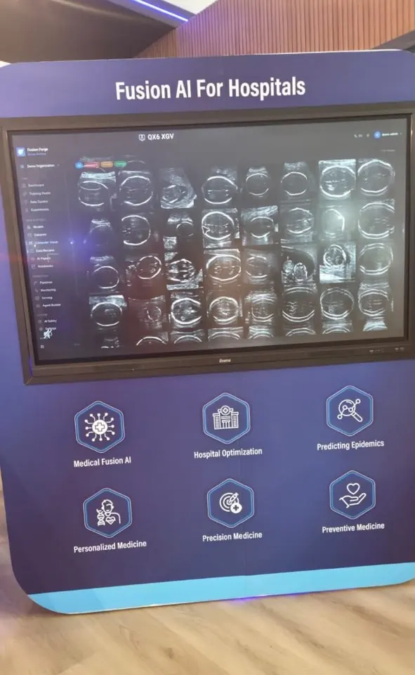
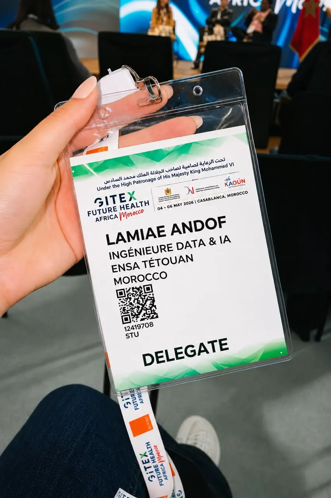
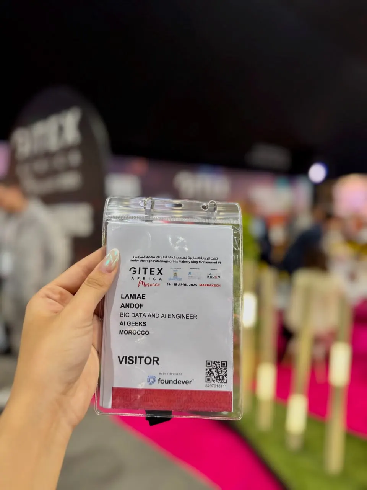

Ingénieure d'État en Data Science, Big Data & IA. Je me spécialise en IA appliquée à la santé et à l'imagerie médicale.
State engineer in Data Science, Big Data & AI. I am specialising in AI for health and medical imaging.
J'ai appris la vision par ordinateur au port de Tanger Med, puis à évaluer la fiabilité de l'IA chez OCP. Ma conviction : en santé, une IA doit être fiable et explicable, et rester au service des soignants. Mon projet phare montre comment je travaille : mesurer honnêtement, regarder où le modèle se trompe, et dire les limites.
I learned computer vision at the port of Tanger Med, then how to evaluate AI reliability at OCP. My belief: in health, AI must be reliable, explainable, and serve caregivers. My main project shows how I work: measure honestly, look at where the model fails, and state the limits.
Fès, Maroc · master visé en 2027Fès, Morocco · master's from 2027
Projet phare · 2026Main project · 2026
IA explicable pour la détection de pneumonie sur radiographies thoraciquesExplainable AI for pneumonia detection on chest X-rays
Un DenseNet-121 évalué sur 624 radiographies d'enfants qu'il n'avait jamais vues, puis expliqué avec Grad-CAM. J'y ai aussi découvert un piège : la forme des images trahissait la classe.
A DenseNet-121 tested on 624 children's X-rays it had never seen, then explained with Grad-CAM. I also found a trap: the shape of the images gave away the class.
Deux années de bases scientifiques avant le cycle d'ingénieur.
Scientific foundations before the engineering cycle.
Cycle d'ingénieur et premier contact avec la radiographieEngineering cycle and first contact with X-rays
Stage au Ministère de l'Éducation nationale (DSI, Rabat) : un assistant IA pour les enseignants. En mai 2024, le projet Coursera « Detecting COVID-19 with Chest X-Ray using PyTorch » : ma première IA sur des radiographies thoraciques. Le projet pneumonie de 2026 le prolonge.
Internship at the Ministry of Education (IT department, Rabat): an AI assistant for teachers. In May 2024, the Coursera project "Detecting COVID-19 with Chest X-Ray using PyTorch": my first AI on chest X-rays. The 2026 pneumonia project builds on it.
Vision par ordinateur en conditions réellesComputer vision in real conditions
Visite du GITEX Africa à Marrakech pour le club AI Geeks (avril). Stage chez CIRES Technologies au port de Tanger Med (juillet à septembre) : détection et lecture de plaques en temps réel. Chatbot en français et en darija pour OCP Al Moutmir. Certificat d'excellence du cours Hugging Face sur les agents IA.
Visited GITEX Africa in Marrakech for the AI Geeks club (April). Internship at CIRES Technologies, port of Tanger Med (July–September): real-time detection and plate reading. French and Darija chatbot for OCP Al Moutmir. Certificate of excellence, Hugging Face AI Agents course.
Fiabilité de l'IA, et premier pas dans la santéAI reliability, and a first step into health
Projet de fin d'études chez OCP Solutions : un assistant RAG évalué avec rigueur. Mission Data & IA chez Marotrans. En mai, déléguée au GITEX Future Health Africa (Casablanca), où j'ai vu des outils d'IA en radiographie thoracique et en échographie. Membre de la cellule HealthTech de l'AMIIA.
Final-year project at OCP Solutions: a RAG assistant, rigorously evaluated. Data & AI assignment at Marotrans. In May, delegate at GITEX Future Health Africa (Casablanca), where I saw AI tools for chest X-ray and ultrasound. Member of AMIIA's HealthTech unit.
Ingénieure d'État, Data Science, Big Data & IAState engineer, Data Science, Big Data & AI
ENSA Tétouan, Université Abdelmalek Essaâdi, 2023-2026. Mention Bien. Projet de fin d'études : 19/20.
Diplomation 2026Graduation 2026Campus de l'ENSA TétouanENSA Tétouan campus
L'IA explicable en médecineExplainable AI in medicine
Du 2 au 4 novembre 2026, j'ai participé à AI-MEDX (« AI in Medicine with eXplainability », UM6P Ben Guerir) avec l'AMIIA. Dans la foulée, j'ai mené mon projet d'IA explicable sur radiographies thoraciques.
From 2 to 4 November 2026, I attended AI-MEDX ("AI in Medicine with eXplainability", UM6P Ben Guerir) with AMIIA. Right after, I carried out my explainable AI project on chest X-rays.
Objectif : un master en IA appliquée à la santéGoal: a master's in AI for health
En France, à la rentrée 2027, pour acquérir les bases cliniques qui me manquent.
In France, from autumn 2027, to gain the clinical knowledge I still lack.
ExpériencesExperience
Ce que j'ai construit en entrepriseWhat I built in companies
Ingénieure IA, projet de fin d'étudesAI engineer, final-year project
OCP Solutions (Groupe OCP), Casablanca · févr. à juin 2026Feb.–June 2026
ProblèmeProblem
Répondre aux questions des équipes à partir des documents internes, en citant ses sources.Answer staff questions from internal documents, with sources.
Ce que j'ai faitWhat I did
Un assistant IA (RAG) livré en SDK Python réutilisable, et une étude exploratoire de GraphRAG pour une version 2 (non implémentée).A RAG assistant delivered as a reusable Python SDK, plus an exploratory study of GraphRAG for a version 2 (not implemented).
RésultatResult
Fidélité des réponses de 71 % à 89 % ; traçabilité des sources de 52 % à 96 %.Answer faithfulness from 71% to 89%; source traceability from 52% to 96%.
Chargée de mission Data & IAData & AI officer
Marotrans, transport routierroad transport, Casablanca · mars à sept. 2026Mar.–Sept. 2026
ProblèmeProblem
Environ 1 h de saisie manuelle par jour pour suivre la flotte.About 1 hour of manual data entry per day to track the fleet.
Ce que j'ai faitWhat I did
Une plateforme de suivi de 182 véhicules avec tableau de bord.A tracking platform for 182 vehicles with a dashboard.
RésultatResult
Export en un clic au lieu de la saisie quotidienne.One-click export instead of daily manual entry.
CIRES Technologies, Digital Factory, port de Tanger Medport of Tanger Med · juil. à sept. 2025July–Sept. 2025
ProblèmeProblem
Détecter les véhicules et lire leurs plaques en temps réel.Detect vehicles and read their plates in real time.
Ce que j'ai faitWhat I did
Une base de plus de 10 000 images annotées ; des modèles de détection (YOLOv5) et de lecture (OCR).A dataset of over 10,000 annotated images; detection (YOLOv5) and reading (OCR) models.
RésultatResult
Précision : 95,7 % (véhicules), 98 % (plaques), 96,6 % (OCR), en temps réel.Precision: 95.7% (vehicles), 98% (plates), 96.6% (OCR), in real time.
OCP Al Moutmir
À distance · juil. à août 2025Remote · July–Aug. 2025
ProblèmeProblem
Répondre aux agriculteurs dans leur langue.Answer farmers in their own language.
Ce que j'ai faitWhat I did
Un chatbot en français et en darija.A chatbot in French and Darija.
Ministère de l'Éducation nationaleMinistry of Education
Aider les enseignants dans leur travail.Support teachers in their work.
Ce que j'ai faitWhat I did
Un assistant IA pour les enseignants.An AI assistant for teachers.
CompétencesSkills
PyTorch
CNN
YOLOv5
Transformers
Grad-CAM
SHAP
LIME
LLM
RAG
Python
SQL
Pandas
Scikit-learn
FastAPI
Docker
Git
Langues : français B2 (TCF, 465 points), anglais intermédiaire, arabe langue maternelle.Languages: French B2 (TCF, 465 points), intermediate English, native Arabic.
ProjetsProjects
Deux projets, une même question : des données humaines utiles et fiablesTwo projects, one question: useful and reliable human data
Terminé · novembre 2026Completed · November 2026
IA explicable pour la détection de pneumonie sur radiographies thoraciquesExplainable AI for pneumonia detection on chest X-rays
DenseNet-121, découpage par patient, métriques médicales avec intervalles de confiance, Grad-CAM sur les réussites et les erreurs. Il prolonge mon projet Coursera de 2024 sur la COVID-19.
DenseNet-121, patient-level split, medical metrics with confidence intervals, Grad-CAM on successes and errors. It extends my 2024 Coursera project on COVID-19.
Projet personnel en cours · 2026Ongoing personal project · 2026
ONZEVUE
Une plateforme de suivi de la charge et de la performance des joueurs de football, développée en collaboration avec un étudiant en Master STAPS. J'y apprends à transformer des données humaines en informations utiles à la décision.
A platform to monitor the training load and performance of football players, built with a sports-science (STAPS) master's student. I am learning to turn human data into information that supports decisions.
Ce qui fonctionne (prototype, données fictives)What works (prototype, fictional data)
Tableau de bord du staff : charge interne (durée × RPE), distance GPS, atteinte des cibles.
Vue du microcycle.
Fiche joueur avec une recommandation expliquée (« Pourquoi ? »), à valider par le staff.
Saisie du wellness : une donnée de santé jamais transmise au modèle d'IA.
Projet académique. Analyse conjointe de la vidéo, de l'audio et du texte.
Academic project. Joint analysis of video, audio and text.
Engagement & IA santéInvolvement & AI in health
Aller voir l'IA en santé de prèsSeeing AI in health up close
AMIIA
Membre de la cellule HealthTech de l'Association Marocaine pour l'Innovation en Intelligence Artificielle.
Member of the HealthTech unit of the Moroccan Association for Innovation in Artificial Intelligence.
AI Geeks, ENSA Tétouan
Co-fondatrice du club. Certificat de leadership pour l'organisation de l'événement AI Geeks × Microsoft Moroccan Community.
Co-founder of the club. Leadership certificate for organising the AI Geeks × Microsoft Moroccan Community event.
ENACTUS
Cheffe de projet.
Project lead.
AI-MEDX 2026, UM6P Ben Guerir, 2-4 novembre 2026AI-MEDX 2026, UM6P Ben Guerir, 2–4 November 2026Participation à AI-MEDX 2026 avec l'AMIIAAttending AI-MEDX 2026 with AMIIACertificat de participation, AI-MEDX 2026Certificate of participation, AI-MEDX 2026GITEX Future Health Africa, Casablanca, mai 2026 : IA en radiographie thoraciqueGITEX Future Health Africa, Casablanca, May 2026: AI for chest X-ray

GITEX Future Health Africa, mai 2026 : IA en échographieGITEX Future Health Africa, May 2026: AI for ultrasound

Déléguée, GITEX Future Health Africa, 4-6 mai 2026Delegate, GITEX Future Health Africa, 4–6 May 2026GITEX Africa, Marrakech, 14-16 avril 2025GITEX Africa, Marrakech, 14–16 April 2025

Visiteuse au nom du club AI Geeks, avril 2025Visitor on behalf of the AI Geeks club, April 2025Événement du club AI Geeks, ENSA TétouanAI Geeks club event, ENSA TétouanInterview accordée à Press Tétouan lors d'un événement du clubInterview with Press Tétouan during a club eventCo-fondatrice du club AI GeeksCo-founder of the AI Geeks club
Certifications
Certificats (cliquez pour ouvrir le PDF)Certificates (click to open the PDF)
Un master en IA appliquée à la santé et à l'imagerie médicaleA master's in AI for health and medical imaging
Je souhaite acquérir les bases du domaine médical et me spécialiser en IA appliquée à la santé et à l'imagerie médicale, en France, à la rentrée 2027. Mon but : concevoir des outils fiables et explicables au service des soignants.
I want to learn the foundations of medicine and specialise in AI for health and medical imaging, in France, from autumn 2027. My goal: build reliable, explainable tools that serve caregivers.
Ce qui me manque encoreWhat I still lack
Savoir lire une image médicale.
Comprendre le parcours de soin.
Connaître les contraintes réglementaires.
Reading a medical image.
Understanding the care pathway.
Knowing the regulatory constraints.
Mon projet radiographies me l'a montré : sans connaissance clinique, je ne peux pas dire si une fausse alerte vient du modèle ou de l'image.
My X-ray project showed me this: without clinical knowledge, I cannot tell whether a false alarm comes from the model or from the image.